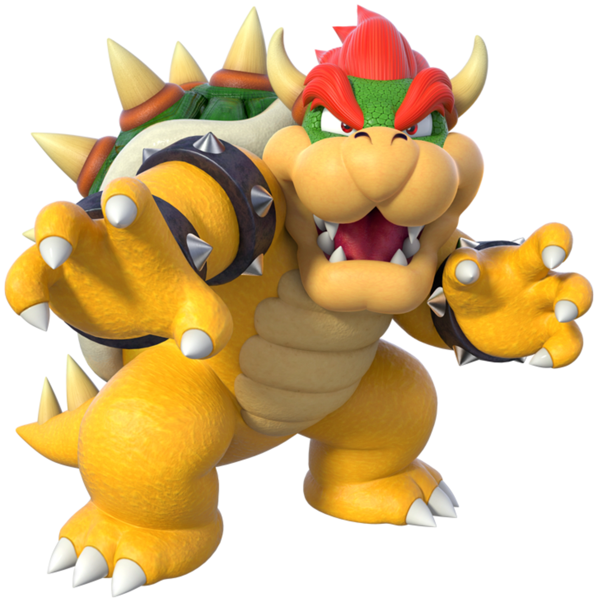

Bowser

- Bowser é o vilão principal e o maior arquiinimigo do Mario
- É o rei da Raça Koopa
- Possui o hábito constante de sequestrar a Princesa Peach devido a uma paixão não correspondida e a vontade de torná-la sua rainha.
- Nos jogos atuais, possui um filho mimado chamado de Bowser Jr. e mais sete filhos súditos chamados de Koopalings.
- ELE também é considerado como vilão e chefe final principalmente na série Mario Bros., mas também em outras séries, como na série Mario Party, em que ele tenta arruinar a festa da turma do Mario, desejando se vingar por não ter sido convidado.
- Porém, também é considerado como herói em outros jogos, como em Mario & Luigi: Bowser's Inside Story, em que durante um momento no qual o Reino dos Cogumelos
e seus habitantes estão passando por uma emergência de saúde relacionado a uma doença misteriosa chamada de Blorbs,
a princesa Peach convoca uma reunião para discutir sobre como combater essa doença, porém Bowser invade a reunião por conta de não ter sido convidado e Mario passa a enfrentá-lo no momento.
No final, Bowser é derrotado e expulso pela princesa com a ajuda de Starlow, uma estrela fantasma e convidado especial da reunião.
Depois, Bowser acorda sozinho numa floresta e de repente, encontra um sujeito misterioso que lhe oferece um "Cogumelo da Sorte",
um item misterioso que lhe dará habilidades misteriosas que lhe ajudarão a derrotar Mario e Luigi.
Com os novos poderes, Bowser invade novamente o Castelo da Peach e consegue aspirar e engolir todos que estão lá, incluindo Mario e Luigi, arremessando-os direto a seu estômago.
Mais tarde, descobre-se que o sujeito que ofereceu o item misterioso para o Bowser é o mesmo responsável pela epidemia Blorbs e uma criatura chamada Fawful. Então, com a ajuda do próprio Bowser sem saber,
Mario e Luigi tentam achar uma forma de derrotar o Fawful e salvar o Reino dos Cogumelos das garras dele.
- Bowser possui o poder principal de cuspir fogo e o poder de girar seu casco, o qual é mostrado em alguns jogos.
Página Anterior